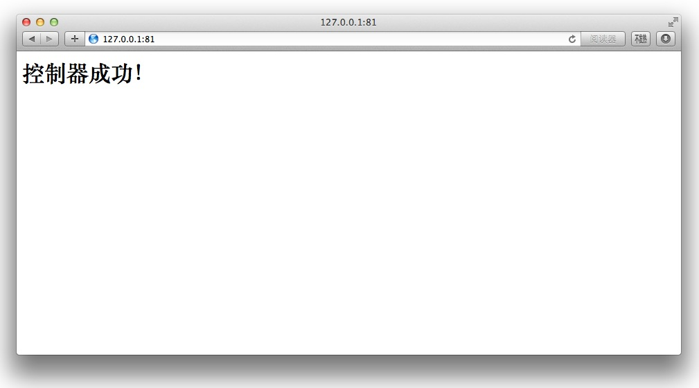
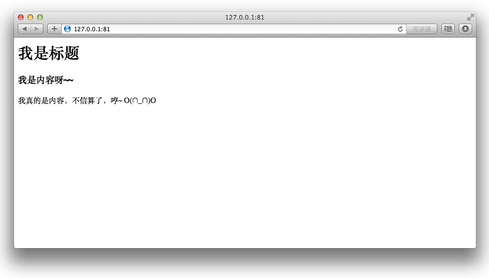

利用 Composer 一步一步构建自己的 PHP 框架（三）——设计 MVC
终于可以 “一次编写，到处发布” 了，泪流满面！
今天凌晨我从一点多开始搞了四个小时到 5:20，终于搞出了个 Emlog 的 MarkDown 插件！欢迎 Emloger 尝试！
本教程示例代码见 https://github.com/johnlui/My-First-Framework-based-on-Composer
回顾
在上一篇教程中，我们使用 codingbean/macaw 这个 Composer 包构建了两条简单路由，第一条是响应 GET ‘/fuck’ 的，另一条会 hold 住所有请求。其实对 PHP 框架来说，有了路由就有了一切。所以接下来我们要做的事情就是让 MFFC 框架更加规范，更加丰满。
这就牵扯到了 PHP 框架另外的价值：确立开发规范以便于多人协作，使用 ORM、模板引擎 等工具以提高开发效率。
正式开始
规划文件夹
新建 MFFC/app 文件夹，在 app 中创建 controllers、models、views 三个文件夹，开始正式开始踏上 MVC 的征程。
（谁说我抄 Laravel 了，我抄的明明是 Rails :-D）
使用命名空间
新建 controllers/BaseController.php 文件：
<?php
/**
* BaseController
*/
class BaseController
{
public function __construct()
{
}
}
新建 controllers/HomeController.php 文件：
<?php
/**
* \HomeController
*/
class HomeController extends BaseController
{
public function home()
{
echo "<h1>控制器成功！</h1>";
}
}增加一条路由： Macaw::get('', 'HomeController@home');，打开浏览器直接访问 http://127.0.0.1:81/，出现以下提示：
Fatal error: Class 'HomeController' not found in /Library/WebServer/Documents/wwwroot/MFFC/vendor/codingbean/macaw/Macaw.php on line 93
为什么没找到 HomeController 类？因为我们没有让他自动加载，修改 composer.json 为：
{
"require": {
"codingbean/macaw": "dev-master"
},
"autoload": {
"classmap": [
"app/controllers",
"app/models"
]
}
}运行 composer dump-autoload，稍等片刻，刷新，你将看到以下内容（别忘了调节编码哦~）：

恭喜你，命名空间使用成功！
连接数据库
新建 models/Article.php 文件，内容为（数据库密码请自行更改）：
<?php
/**
* Article Model
*/
class Article
{
public static function first()
{
$connection = mysql_connect("localhost","root","password");
if (!$connection) {
die('Could not connect: ' . mysql_error());
}
mysql_set_charset("UTF8", $connection);
mysql_select_db("mffc", $connection);
$result = mysql_query("SELECT * FROM articles limit 0,1");
if ($row = mysql_fetch_array($result)) {
echo '<h1>'.$row["title"].'</h1>';
echo '<p>'.$row["content"].'</p>';
}
mysql_close($connection);
}
}修改 controllers/HomeController.php 文件：
<?php
/**
* \HomeController
*/
class HomeController extends BaseController
{
public function home()
{
Article::first();
}
}刷新，这时候会得到 Article 类未找到的信息，因为我们没有更新自动加载配置：
composer dump-autoload
在等待的时间里，我们去建立数据库 mffc，在里面建立表 articles，设计两个字段 title、content 用于记录信息，并填充进至少一条数据。你也可以在建立完成 mffc 数据库以后运行以下 SQL 语句：
DROP TABLE IF EXISTS `articles`; CREATE TABLE `articles` ( `id` int(11) unsigned NOT NULL AUTO_INCREMENT, `title` varchar(255) DEFAULT NULL, `content` longtext, PRIMARY KEY (`id`) ) ENGINE=InnoDB DEFAULT CHARSET=utf8; LOCK TABLES `articles` WRITE; /*!40000 ALTER TABLE `articles` DISABLE KEYS */; INSERT INTO `articles` (`id`, `title`, `content`) VALUES (1,'我是标题','<h3>我是内容呀~~</h3><p>我真的是内容，不信算了，哼~ O(∩_∩)O</p>'), (2,'我是标题','<h3>我是内容呀~~</h3><p>我真的是内容，不信算了，哼~ O(∩_∩)O</p>'); /*!40000 ALTER TABLE `articles` ENABLE KEYS */; UNLOCK TABLES;
然后，刷新！你将看到以下页面：

恭喜你！MVC 中的 M 和 C 都已经实现！接下来我们开始调用 V (视图)。
调用视图
修改 models/Article.php 为：
<?php
/**
* Article Model
*/
class Article
{
public static function first()
{
$connection = mysql_connect("localhost","root","C4F075C4");
if (!$connection) {
die('Could not connect: ' . mysql_error());
}
mysql_set_charset("UTF8", $connection);
mysql_select_db("mffc", $connection);
$result = mysql_query("SELECT * FROM articles limit 0,1");
if ($row = mysql_fetch_array($result)) {
return $row;
}
mysql_close($connection);
}
}将包含查询结果的数组返回。修改 HomeController：
<?php
/**
* \HomeController
*/
class HomeController extends BaseController
{
public function home()
{
$article = Article::first();
require dirname(__FILE__).'/../views/home.php';
}
}保存，刷新，你将得到跟上面一模一样的页面，视图调用成功！
几乎所有人都是通过学习某个框架来了解 MVC 的，这样可能框架用的很熟，一旦离了框架一个简单的页面都写不了，更不要说自己设计 MVC 架构了，其实这里面也没有那么多门道，原理非常清晰，我说说我的感悟：
1. PHP 框架再牛逼，他也是 PHP，也要遵循 PHP 的运行原理和基本哲学。抓住这一点我们就能很容易地理解很多事情。
2. PHP 做的网站从逻辑上说，跟 php test.php 没有任何区别，都只是一段字符串作为参数传递给 PHP 解释器而已。无非就是复杂的网站会根据 URL 来调用需要运行的文件和代码，然后返回相应的结果。
3. 无论我们看到的是 CodeIgniter 这样 180 个文件组成的“小框架”，还是 Laravel 这样加上 vendor 一共 3700 多个文件的 “大框架”，他们都会在每一个 URL 的驱动下，组装一段可以运行的字符串，传给 PHP 解释器，再把从 PHP 解释器返回的字符串传给访客的浏览器。
4. MVC 是一种逻辑架构，本质上是为了让人脑这样的超低 RAM 的计算机能够制造出远超人脑 RAM 的大型软件，其实 MVC 架构在 GUI 软件出现以前就已经成形，命令行输出也是视图嘛。
5. 在 MFFC 里，一个 URL 驱动框架做的事情基本是这样的：入口文件 require 控制器，控制器 require 模型，模型和数据库交互得到数据返回给控制器，控制器再 require 视图，把数据填充进视图，返回给访客，流程结束。
下一步：利用 Composer 一步一步构建自己的 PHP 框架（四）——使用 ORM

评论：
2015-08-09 21:50
两个文件夹中都创建了一个IndexController.php控制器文件，类名一样都是IndexController
然后用composer.phar dump-autoload 重新生成autoload_classmap.php文件时，发现了：
return array(
'BaseController' => $baseDir . '/app/controller/BaseController.php',
'BaseModel' => $baseDir . '/app/models/BaseModel.php',
'HomeController' => $baseDir . '/app/controller/HomeController.php',
'IndexController' => $baseDir . '/app/controller/Home/IndexController.php',
);
IndexController这个类名的自动加载路径是$baseDir . '/app/controller/Home/IndexController.php', Home文件夹下的。
这样的话，加载Test下的文件时会有问题，好吧....试了一下加上命名空间，重新composer.phar dump-autoload就可以了
'Controller\\Test\\IndexController' => $baseDir . '/app/controller/Test/IndexController.php', //命名空间的IndexController
'IndexController' => $baseDir . '/app/controller/Home/IndexController.php',
这种有命名空间的类在routes中需要怎么指向调用？
2015-05-14 11:40
Generating autoload files
2015-03-26 17:04
Macaw::get('', 'HomeController@home')
这样注册路由也会报文件不存在！
应该把命名空间也加上
Macaw::get('', 'controllers\HomeController@home')
这样就不会错！
因为 autoload_classmap.php 里面只有 “controllers\HomeController” 键 的记录，没有 “HomeController” 键!
我反正是碰到这样的错误了... 谢谢博主的教程...爽歪歪!

2015-01-15 15:48
2015-01-16 08:53
Macaw::get('/fuck',function(){
echo "Success!";
});
Macaw::get('(:all)',function($fu){
echo "未匹配到路由".$fu;
});
Macaw::get('', 'HomeController@home');
Macaw::dispatch();
按照教程配置,不懂为啥,我配的路由要加绝对路径,需要加绝对路径这边空的Macaw::get('', 'HomeController@home');要怎么写啊,大神指点下
2015-01-16 10:37
另外路由是先匹配到的条目直接返回，所以这一行要放到最上面。


 教程一的时候建立过啦~
教程一的时候建立过啦~
 赞，期待下文！
赞，期待下文！
2015-11-25 11:13